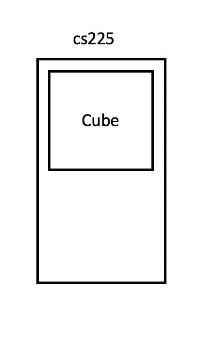
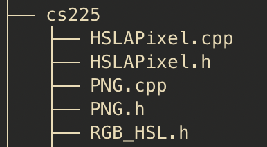

Variables and Classes
Every variable is defined by four properties:
- type
- name/identifier
- value
- location/address
Every variable is one of two types:
- Built-in types (primitive types)
- User-defined types (class keyword)
The Rule of Three
https://zh.wikipedia.org/wiki/%E4%B8%89%E6%B3%95%E5%89%87 https://en.cppreference.com/w/cpp/language/rule_of_three
If it is necessary to define any one of these three functions in a class, it will be necessary to define all three of these functions:
- Destructor
~X()- If you use heap memory, the default destructor will not release that....
- 如何释放 heap 中的内存？只删除指针是没用的。
- Copy Constructor
X(const X &other)- If you care about the deep copy (instead of shallow copy)... search deep copy in this gitbook....
- Deep copy usually involves with pointers. Shallow copy will copy the address of pointer instead of the content.
- 要注意的是，直接地复制指针地址是一项非常危险的动作。因此，任何指针的 class 都需要 deep copy. (至少你需要写一个 copy constructor)
- Assignment Operator
- Clean the original content (destructor)
- Make a copy of the assignment (copy construtor)
- 两者结合
Info: Use the Rule of Three by default
The Rule of Five is just for optimization purpose, you could use Rule of Three by default. It should have the same behaviours.
The Rule of Five
https://en.cppreference.com/w/cpp/language/rule_of_three
With the advent of C++11 the rule of three can be broadened to the rule of five as C++11 implements move semantics, allowing destination objects (lvalue) to grab (or steal) data from temporary objects (rvalue).
- destructor
- copy constructor
- copy assignment operator
- move constructor
- move assignment operator
If you don't specify anything
class X {
public:
// constructor
X() = default;
// copy constructor
X(const X& other)) = default;
// copy assignment operator
X& operator=(const X& other) = default;
// move constructors
X(X&& other) = default;
// move assignment operators
X& operator=(X&& other) = default;
// destructor
~X() = default;
};
Failing to provide move constructor and move assignment is usually not an error, but a missed optimization opportunity.
The Rule of Zero
https://www.fluentcpp.com/2019/04/23/the-rule-of-zero-zero-constructor-zero-calorie/
C.20: If you can avoid defining default operations, do.
And the guideline goes on by saying that this is known as the “Rule of Zero“.
Either they (copy/move constructors, copy/move assignment operators, destructor) all have a non-trivial implementation that deals with ownership, or none of them is declared.
Define Your Types
Encapsulation principles for building new types.
- header ,
Cube.h- out-side:
- how to interact with the external world.
- like a protocol without any implementations.
- out-side:
- implementation,
Cube.cpp- in-side:
- how to implement the functionality?
- changes in the implementation should only affect the things inside without causing any chaos to the external world.
- in-side:
Const
When modifying a data declaration, the const keyword specifies that the object or variable is not modifiable.
https://docs.microsoft.com/en-us/cpp/cpp/const-cpp?view=msvc-160
Header
Two common key pieces:
- pragma directive to avoid duplicating declaration...
- class declaration without implementation
#pragma once
class Cube{
public:
double getVolume();
private:
double length_;
};
Note that length_ is the Google C++ Coding style.
Class Implenetation
Include the header file...
Define the implementation by the :: operator....
#include "Cube.h"
double Cube::getVolume(){
}
Class Lifecycle
How does an object exist? When/How it was created? When/How it will be destroyed?
This Pointer
As Python, C++ actually passes the current object as this pointer to the method being invoked.
class car():
# init method or constructor
def __init__(self, model, color):
self.model = model
self.color = color
The parameter self is the current object. Similarily, C++ also passes the current object as this.
Default Constructor
If you don't explicitly initialize the variables in an object while creating the object, then you won't know what will happen in the object!
The implicit default constructor will simply allocate memory for the variables in the object, but it is not responsible for initialize the values of the varaibles.
The coustom default constructor is a explicit way to initialize an object.
The header file Cube.h
class Cube{
public:
Cube();
private:
double length_;
}
The implementation Cube.cpp
Cube::Cube(){
/* initialization .....*/
length_ = 1.0;
}
Cube::Cube(double length){
length_ = length;
}
Info: Contructor has not return type
The contructor does not return anything!
Default Destructor
The last and final member function called in the lifecycle of a class is the destructor.
The destructor is a function that frees any resources maintained by the class. It can be memory or files.
- memory allocated by
new - close files
Automatic Destructor
Will be invoked if the stack frame is returned or delete keyword.
- Remove each member variable by destruction
- If you make a deep copy, you need the custom destructor.
Custom Destructor
The header file Cube.h looks like
class Cube {
public:
// constructor
Cube(); // default ctor
Cube(double length); // 1-param ctor
// copy constructor (pass-by-value)
Cube(const Cube & other); // custom copy ctor
// destructor
~Cube(); // destructor, or dtor
...
The implementation Cube.cpp looks like
namespace cs225 {
...
// destructor
Cube::~Cube(){
/* Release the resource in the heap ! */
}
}
Namespace
Namespace is like a seperate folder. This is the way we avoiding naming conflicts in our file system.
The header file Cube.h
#pragma once
namespace cs225 {
class Cube {
public:
double getVolume();
The implementaiton Cube.cpp
#include "Cube.h"
namespace cs225 {
double Cube::getVolume() {
return length_ * length_ * length_;
}
How the namespace looks like? It is just a folde that contains some classess and functions!

Assume HSLAPixel and PNG are classes in the namespace cs225.
By convention, you need to put them into a seperated folder. It should look like.

Danger: using namespace
You may be farmilar with using namespace std.
But it is not encouraged!